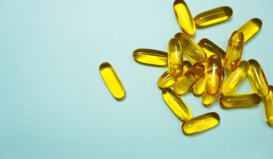
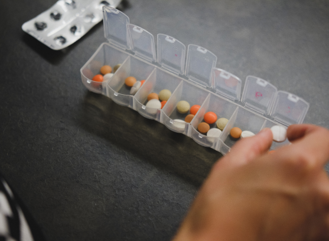

SUPLEMENT & VITAMIN
Suplemen adalah nutrisi atau fitokimia yang
disediakan untuk melengkapi yang diperoleh dari
makanan. Definisi
Supositoria adalah cara
memberikan obat ke tubuh. Pil dan obat cair yang
diambil melalui mulut biasanya akan memasuki tubuh
melalui dindin sistem pencernaan.

Manfaat Suplement
- Minyak ikan untuk mengurangi risiko kardiovaskular karena
mengandung asam lemak lemak omega-3 seperti asam
eicosapentaenoic (EPA) dan docosahecaenoic acid (DHA). - Chicken essence berpotensi meredakan kelelahan fisik dan
meningkatkan kinerja olahraga ,menurut penelitian. - Suplemen berupa produk kedelai untuk membantuk mengobati
hiperkolesterolemia. - Probiotik untuk bermacam-macam kondisi gangguan
pencernaan, seperti sindrom iritasi usus besar, infeksi diare,dan
kolitis ulseratif - Jahe untuk meredakan mual dan muntah pada awal semester
kehamilan, pascakemoterapi, dan kondisi mabuk.

Perhatikan Hal Ini Sebelum
Mengonsumsi Suplemen
- Hindari mengonsumsi suplemen dengan tujuan mengobati
penyakit tertentu, apalagi jika anda membuat diagnosis sendiri.
Berkonsultasilah terlebih dahulu dengan dokter. - Pahami bahwa efektivitas dan keamanan suplemen bukan
diukur dari istilah "alami" yang tercantum dalam kemasan, tetapi dari kandungan kimia pada produk tersebut, cara kerja di dalam
tubuh, takaran pemakaian, dan proses pembuatannya. - Sebelum mengonsumsi suplemen,pastikan bahwa anda sudah
memahami manfaat kesehatannya bagi anda,risiko yang
mungkin ditimbulkan,aturan pemakaian,serta berapa lama
anda harus menggunakannya.